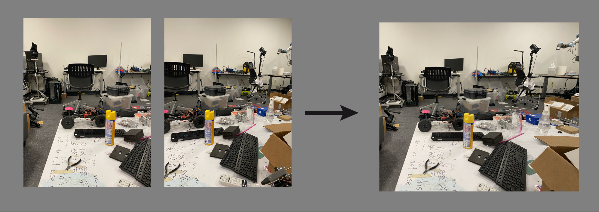

Projects

Re-implementation of LoFTR in TensorFlow
Rohan Gangakhedkar, Fady Algyar, Miles Kilcourse, Suraj Reddy
New York University

Optimized Image Stitching in Python
New York University

Optimal control of a drone using an iterative Linear-Quadratic Regulator
New York University